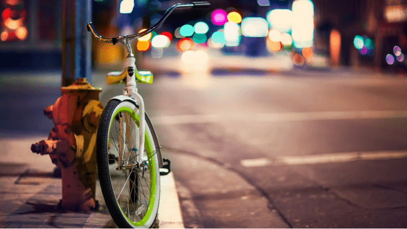

A história da bicicleta no Brasil
No final do século XIX, a bicicleta chegou ao Brasil vinda da Europa. Os primeiros relatos de sua existência em território brasileiro são no Paraná, mais precisamente em Curitiba, cidade que recebeu muitos imigrantes europeus desde a segunda metade do século XIX, e em São Paulo.
Em Curitiba, em 1895, já existia um clube de ciclistas organizado por imigrantes da colônia alemã local. Em São Paulo, Veridiana da Silva Prado construiu a primeira praça do país contendo um velódromo. Essa praça era dentro de sua chácara, na região da Consolação (atualmente, é a Praça Roosevelt).
Logo em seguida, foi fundado, na cidade de São Paulo, o Veloce Club Olímpico Paulista. Não podemos afirmar, com certeza, se foi no Sul ou no Sudeste do Brasil a primeira aparição da bicicleta, mas a incidência muito grande de imigrantes europeus no Paraná, Santa Catarina e Rio Grande do Sul, principalmente de alemães (que foram os inventores do velocípede), e de famílias abastadas em São Paulo, indicam uma grande probabilidade de ter sido nestas regiões que ocorreram os primeiros passeios de bicicleta em território brasileiro. Isso porque a bicicleta era um produto muito distante para a realidade brasileira entre o final do século XIX e as primeiras décadas do século XX: o custo de importação era muito elevado. Além disso, inexistiam fabricantes em território brasileiro.
Com os adventos da Primeira Guerra Mundial (1914-1918) e da crise americana de 1929, a indústria ciclística brasileira restringiu-se à fabricação de selim e para-lamas. As marcas de bicicletas que dominavam o mercado eram: Bianchi, Lanhagno, Peugeot, Dupkopp, Phillips, Hercules, Raleigh, Prosdócimo, Singer, Caloi e Monark, todas importadas da Europa ou dos Estados Unidos, sendo vendidas em lojas como: Prosdócimo, Casa Luís Caloi, Mappin Stores e Casa Muniz (Prosdócimo, Monark e Caloi, por exemplo, eram bicicletas montadas no Brasil, sendo suas peças importadas dos seus países de origem). A virada desta situação começou em meados da década de 1940, quando houve dificuldades de importação das peças em função da Segunda Guerra Mundial (1939-1945). Empresas como Caloi, Monark e Irca (Irmão Caloi, uma cisão da família Caloi) passaram a produzir grande parte das peças e, a partir da década de 1950, as bicicletas dessas marcas passaram a ser produzidas integralmente no Brasil, graças ao governo de Getúlio Vargas, que, visando a fortalecer a indústria nacional e à criação de postos de trabalho, aplicou um corte drástico nas quotas de importação dos bens de consumo, atingindo as montadores de bicicletas.
Entre a década de 1950 e os anos 1970, o Brasil possuiu trinta fabricantes, que produziam aproximadamente cinquenta marcas/modelos de bicicletas. Mas, a partir da década de 1980, duas fábricas (Caloi e Monark) passaram a dominar 95 por cento do mercado. Mesmo assim, houve um novo impulso na fabricação e vendas neste nicho de mercado, graças ao empenho dos fabricantes em juntar forças entre si ao criarem, em 1976, a Associação Brasileira dos Fabricantes de Motocicletas, Ciclomotores, Motonetas, Bicicletas e Similares.
A partir dos anos 2000, os governos locais de vários centros urbanos do Brasil, além do governo federal, passam a projetar investimento em ciclovias visando à redução da poluição atmosférica produzida pelos veículos automotores, propiciando, assim, um nova procura pelas bicicletas, seja para lazer, esporte ou para substituir o automóvel no deslocamento residência-trabalho. O aumento no uso da bicicleta no país, no entanto, gerou também um aumento no número de acidentes de trânsito envolvendo o veículo. Fruto, muitas vezes, de uma desinformação generalizada, tanto de ciclistas quanto de motoristas e pedestres, quanto aos direitos e deveres relativos à condução desse tipo de veículo. É dever, por exemplo, do motorista, segundo o Código de Trânsito Brasileiro, respeitar uma distância lateral mínima de 1,5 metros em relação ao ciclista. Este, por sua vez, deve circular nas ciclovias ou no lado direito das vias, no mesmo sentido dos veículos, usando equipamentos de segurança (capacete, cotoveleiras, joelheiras, espelhos, retrovisores, campainha e refletores "olhos de gato"), sinalizando suas ações com o braço e respeitando a sinalização dos semáforos, das faixas de pedestre e das placas de trânsito. Deve empurrar a bicicleta quando transitar sobre calçadas, deve manter-se em fila única quando em grupo e deve evitar ruas movimentadas, não podendo pegar carona na traseira de veículos motorizados.
Fonte: https://pt.wikipedia.org/wiki/Bicicleta